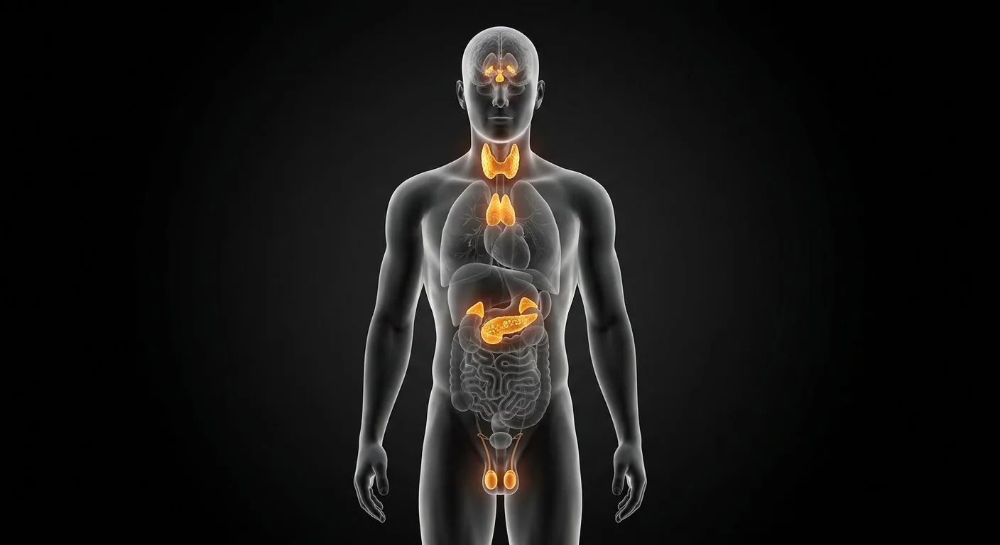

ORGAN → UNDER THE LENS
Thyroid follicles and colloid
Tap to compare the organ region with a tissue-level teaching illustration.
Read about Thyroid follicular cells ↓The body's slow wiring: hormones released straight into blood to tune metabolism, growth, stress, salt, sugar and reproduction.

Anterior pituitary somatotrophsAdrenal zona glomerulosaAdrenal glandsAdrenal zona fasciculataJuxtaglomerular apparatusAdrenal zona reticularisAdipose (leptin)Pituitary glandPosterior pituitary axon terminalsPineal glandAnterior pituitary corticotrophsThyroid glandParathyroid glandsParathyroid chief cellsAtrial natriuretic peptidePancreatic isletsEnteroendocrine cellsGonads (testis / ovary)Every ductless gland on one figure — including the ones you never see: pineal, parathyroids, adrenals and the islets.
These are educational cutaways, not literal magnifications of an organ pixel or laboratory slides. A ring marks the approximate tissue region; part-specific lines appear only where identifiable.
Tap to compare the organ region with a tissue-level teaching illustration.
Read about Thyroid follicular cells ↓Tap to compare the organ region with a tissue-level teaching illustration.
Read about Pancreatic beta cells ↓These 18 structures describe anatomy related to the chapter’s regional illustration. Each entry separates location, function and a clinical point.
Pea-sized master gland in the sella turcica.
What it doesReleases ACTH, TSH, GH, LH/FSH, prolactin, ADH/oxytocin store.
Clinical connectionPituitary adenoma → visual field loss (optic chiasm above).
Tiny cone on the dorsal diencephalon.
What it doesMelatonin — circadian rhythm.
Clinical connectionCalcifies with age; useful midline marker on CT.
Butterfly gland on the trachea.
What it doesT3/T4 metabolic rate; calcitonin.
Clinical connectionGoitre and thyrotoxicosis are common presentations.
Four grains on the thyroid's back.
What it doesPTH — raises plasma calcium.
Clinical connectionAccidental removal in thyroidectomy → tetany.
Caps on each kidney: cortex + medulla.
What it doesCortisol, aldosterone, adrenaline.
Clinical connectionAddison's: hypotension, pigmentation, fatigue.
1–2 million islets in the pancreas.
What it doesInsulin (β) and glucagon (α) — glucose control.
Clinical connectionDiabetes mellitus = islet failure or resistance.
Testes or ovaries in the pelvis.
What it doesSex steroids and gametes.
Clinical connectionTurner/Klinefelter: chromosomal gonadal failure.
Where distal tubule meets its glomerulus.
What it doesRenin — blood pressure and salt balance.
Clinical connectionRenin-secreting tumour: rare curable hypertension.
Released by stretched atrial myocytes.
What it doesNatriuresis and vasodilation — volume off-switch.
Clinical connectionRaised in heart failure as a compensatory marker.
Scattered hormone cells of gut mucosa.
What it doesGastrin, CCK, secretin, GLP-1.
Clinical connectionGLP-1 drugs mimic the gut's own incretin.
Fat as an endocrine organ.
What it doesLeptin — long-term energy signalling.
Clinical connectionLeptin resistance accompanies obesity.
Adenohypophyseal cells secreting growth hormone.
What it doesDrive growth and metabolic signaling via GH and IGF-1.
Clinical connectionPituitary tumors may overproduce GH.
Pituitary cells making ACTH from POMC precursor.
What it doesStimulate adrenal cortisol production.
Clinical connectionACTH deficiency causes secondary adrenal insufficiency.
Hypothalamic nerve endings within neurohypophysis.
What it doesRelease ADH and oxytocin made in hypothalamus.
Clinical connectionPosterior pituitary stores rather than synthesizes these hormones.
Outermost adrenal cortical layer beneath capsule.
What it doesProduces aldosterone under angiotensin II and potassium control.
Clinical connectionExcess can cause hypertension with hypokalemia.
Middle and largest adrenal cortical zone.
What it doesProduces glucocorticoids including cortisol.
Clinical connectionACTH excess can enlarge this zone.
Inner adrenal cortical network adjacent to medulla.
What it doesProduces adrenal androgen precursors.
Clinical connectionAndrogen excess has different effects across ages.
Small endocrine cells of parathyroid glands.
What it doesSecrete PTH in response to falling ionized calcium.
Clinical connectionAdenoma can cause hypercalcemia.
These 2 additional entries give anatomical context. They are deliberately not assigned a photographic pin on the regional image.
Cells encircling extracellular colloid in thyroid follicles.
What it doesSynthesize and release T4/T3 after iodination and processing.
Clinical connectionTSH regulates their activity.
Insulin-producing cells of endocrine pancreatic islets.
What it doesLower circulating glucose by promoting uptake/storage.
Clinical connectionBeta-cell loss causes insulin deficiency.
Short answers grounded in the structures described above. Use the illustrated guide for anatomical context.
The endocrine system includes hormone-producing structures such as the pituitary, thyroid, parathyroids, adrenals and pancreatic islets, with other organs also contributing hormones.
Endocrine tissue releases hormones into the blood. Exocrine glands deliver products through ducts to a surface or lumen, as pancreatic acini do for digestion.
Pea-sized master gland in the sella turcica. Function: Releases ACTH, TSH, GH, LH/FSH, prolactin, ADH/oxytocin store.
Butterfly gland on the trachea. Function: T3/T4 metabolic rate; calcitonin.
Function: Cortisol, aldosterone, adrenaline. Caps on each kidney: cortex + medulla.
Follow these connected structures and body systems in the illustrated atlas.
General anatomy references and related source chapters for continued study. These links do not make the digital illustrations clinical images or certify every anatomical variant.
This educational page is not medical advice and has not undergone formal clinical peer review. Spotted an error? Contact the editor.
Open the realistic interactive plate, label lines, focus view and self-test.